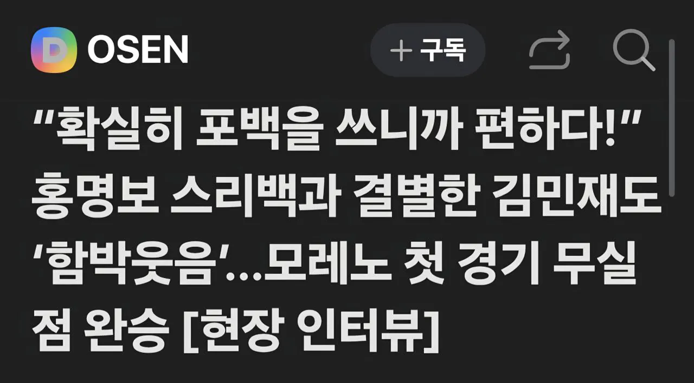
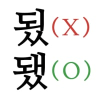

바이에른 뮌헨 센터백 김민재," 확실히 4백을 쓰니까 편하다"
댓글

됐
3백이 더 수비적인 전술인디 공격력이라도 살리자는 건 무슨 뜻이야?
ㄹㅇㅋㅋㅋㅋㅋ
4백이면 맹보가 구멍이라 3백으로 썼다는의미아닌가
그럼 말되네 ㅇㅎ
그래도 보통 척지기 싫으니 말 조심하는데
얼마나 ㅈ같았으면 선수들이 거침없이 얘기하는구나 ㅋㅋㅋㅋ
해버지가 칼잡고 적폐들 뎅겅해주니까 맘편하지
대놓고 저렇게 말하는것도 쉽지 않은데 ㅋㅋㅋㅋㅋ
내다버린 4년
대놓고 ㅋㅋㅋ 어휴 ㅋㅋㅋ
사실 이제 볼 일 없지 뭐
쓰리백의 핵심은 공수 양면으로 엄청난 활동량을 가져가는 윙백인데 시발 설영우로 무슨 쓰리백을 하겠다고 02년때는 이영표 송종국이 있었다는걸 까먹었나
동네 피파충만 불러와도 모두가 아는 사실인데
2002년에 시간이 멈춘 그분만 모름
심지어 홍명보도 실력은 되는데 수비력이 원체 개떡같으니까 차라리 공격력이라도 살리자고 쓴게 3백이었는데 그런 고민 따윈 1도 안한게 레전드임
그냥 내가 했을때 잘됬으니 남들도 잘될거라 생각하는 수준임